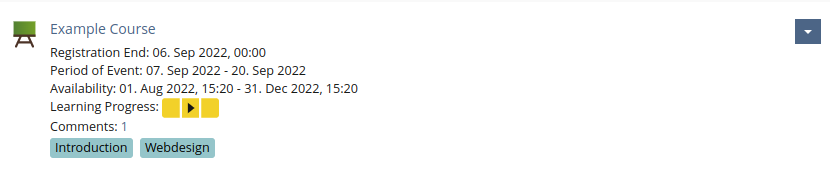
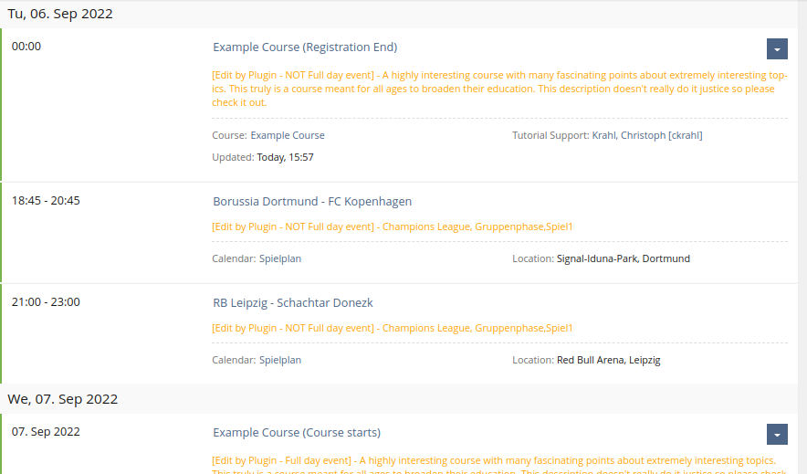
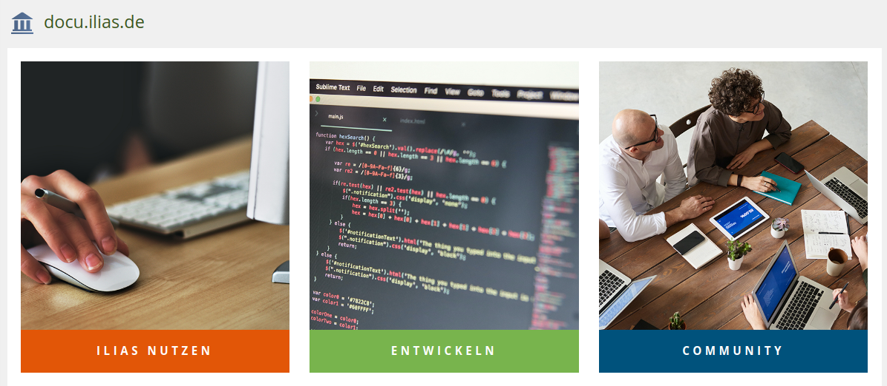
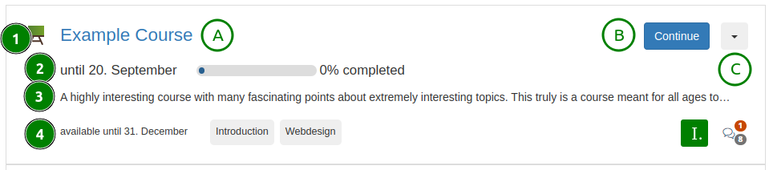

Drowning in item properties
UX principles to ensure users see what’s relevant first
Ferdinand Engländer
Frontend Designer, CaT Concepts and Training GmbH
Research project collaboration between
- the University of Bern
- CaT Concepts and Training
University of Bern: Timon Amstutz, Yvonne Seiler
CaT Concepts and Training: Nils Haagen, Christoph Krahl, Richard Klees & others
Questions about terms and phrases in the presentation: please raise your hand
Discussion topics and general questions: please keep them in mind for the end of this session

- Properties blend together
- most of the text properties: same size, color, place
- takes time to locate the relevant date
The property area holds all kinds of things:

Feature Request for Catalogue View

- properties still blending together
- which properties get an icon or a color?
- Do they always get that icon or color?
- What’s the best order?
- How do we identify the “right” decisions?
Guidelines?
Criterias to make the best decisions for the
- positioning
- grouping
- formatting
of properties on items (objects with properties)
to maximize
- readability
- ease of use
Research
Collecting
What
- types of properties
- design and layouts for properties
already exist in ILIAS?
Very helpful table in FR: Streamline Object Properties

Collection of noteworthy property designs and functionality

but also small details like different link renderings:
Key: Value
Workshop at CaT
Developers and product managers discussing UX challenges with properties
from their own experience or interaction with users
- large amounts of irrelevant information when looking for a specific property
- wasted empty space (in particular wide repository items with few or zero displayed properties)
- failed communication through irrelevant pictures (in UI Cards)
- unknown iconography (the empty UI Progress Meter)
University of Bern:
- great input from Timon and Yvonne
- funding to further explore this topic
Established UX Principles
- Young, I. (2008). Mental Models - Aligning Strategy with Human Behavior. Rosenfeld Media, LLC
- Spencer D. (2010). A Practical Guide to Information Architecture. UXmastery. Link
- Prof. Mahyar, N. (2019). Mental Models - Conceptual Models and Design. Lecture at the University of Massachusetts Amherst. Link
- Babich N. (2020). The Beginner’s Guide to Information Architecture in UX. Adobe XD Website. Link
Information Architecture
- not about visual design
- purely a semantic, layered structure
- guide a user through layers, branches or funnels to the content or action they intended to find
- Relevant data is provided when and where it is expected
- data irrelevant to the current user intent is minimized
User intent
- describes the user’s goal of their current interaction with the interface
The Users Mental Model
- describes how a user thinks they will get to their goal
- User intent: pick a course from a category
- mental model: file manager navigation:
- categories distinguishable from course objects
- clicking on category goes one level deeper in the hierarchy
- Potential mismatch: double-click?
- information architecture
- user intent
- mental model
From theory to practical application in ILIAS?
In ILIAS…
- many different user roles
- dozens of different object types
- vastly different possible actions
In ILIAS it’s very challenging to
- guess one current user intent
- match their mental model
because many views support more than one purpose or action.
Most relevant models?
What general types of user intents and mental models do we have in ILIAS?
- Making a quick choice
- Comparing before choosing
- Managing multiple objects
Making a quick choice
- decide on which of some expected objects to click on (e.g. first semester vs. second semester)
- only 1 - 2 properties guide this decision
- most prominent action often is the reason why the user is here
Example: Contact or Member Gallery

Comparing before choosing
- compare a selection of relevant properties of multiple objects before making a choice between them
- multiple properties seen as relevant help to make the decision
- usually there is one prominent action
Example: Agenda View

Managing multiple objects
- administrators or users with a special role
- want to collect, compare, and modify multiple objects and many of their properties
- for sorting and bulk processing actions
Example: User Management
Different focus
- Quick choice = 1 - 2 properties
- Comparing before choosing = 3 - 4 properties
- Managing multiple objects = many properties
Tendency of UI components
- Quick choice = card
- Comparing before choosing = item, presentation table

- Managing multiple objects = table
Strategies
to assist the users with these mental models
User adjusted views
User sets filters and sorting according to their current intent, leaving only (or mostly) the data they wish to work with.
Filters for tables and repository items
Curated views
Someone builds a view (or a sequence of views) choosing to include, exclude, deemphasize, and highlight data to support the user by anticipating a single (or a few) selected intents and needs.
Managing users build card grids with the page editor

Structured patterns
Semantic grouping
User directs their attention to a section where they expect to consistently find the currently relevant data and actions.
Advantage: View doesn’t change with user intent, but the user changes their focus.
Groups (WIP example)
- featured properties most relevant to most common user intent
- most important and other actions
- content detail properties
- community interaction
- additional (meta) data
Example grouping
Decending priorities & learned positions

- 1 & 2: featured properties most relevant to most common user intent
- A & B: most important and C: other actions
- 3: content detail properties
- I.: community interaction
- 4: additional (meta) data
Other experiments & ideas
- Pulling most important action from dropdown as btn-primary
- Omitting keys when not needed
- Omitting current year, start or end dates
- Omitting registration dates when already registered
Wild thoughts
- Do properties have to appear on the item? How about in the slate? (screenshot from Nextcloud)

Next steps
PR to the UI framework docs with the presented UX Guidelines and Models to reference and work with: github.com/ILIAS-eLearning/ILIAS/pull/4916/
Implement structured patterns in WIP projects e.g Streamline Object Properties
Follow-up roadmap and feature requests?